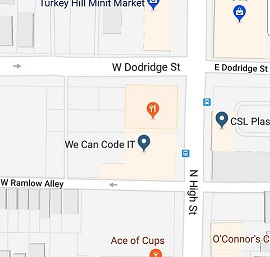
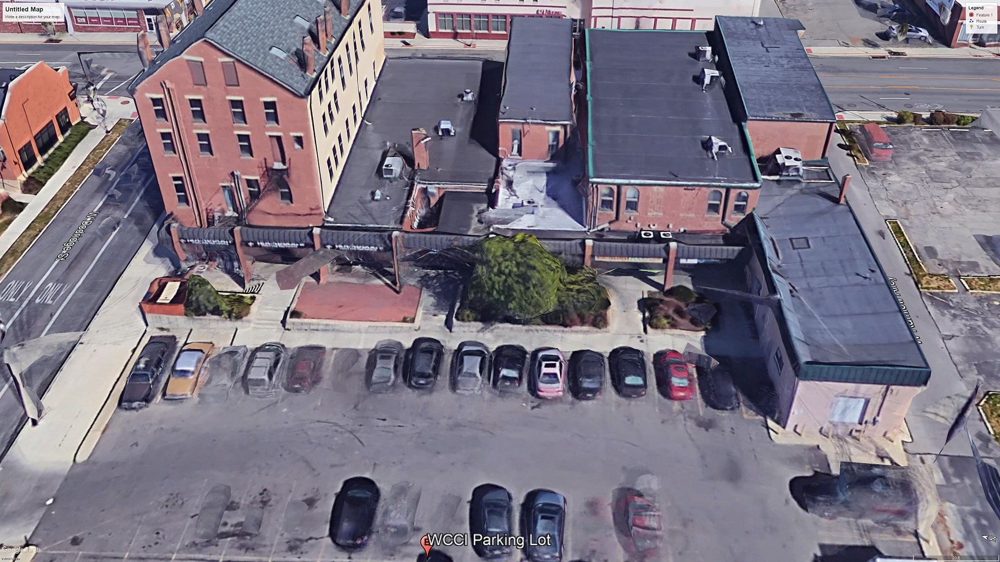
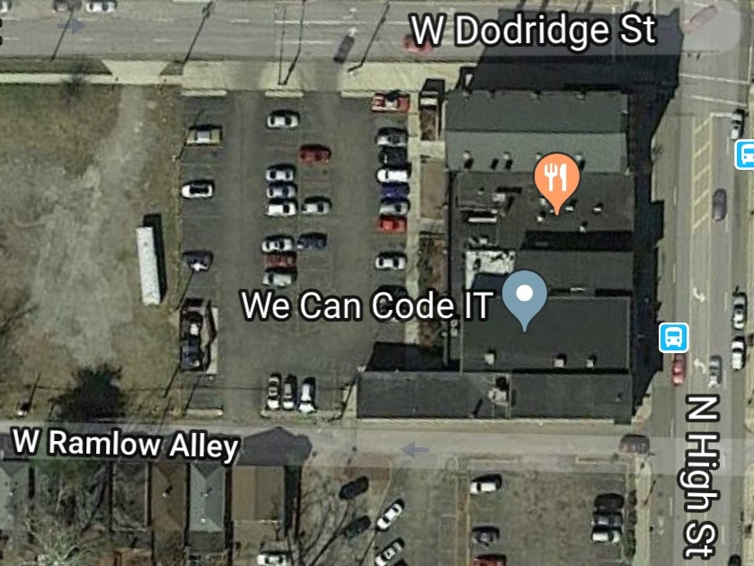
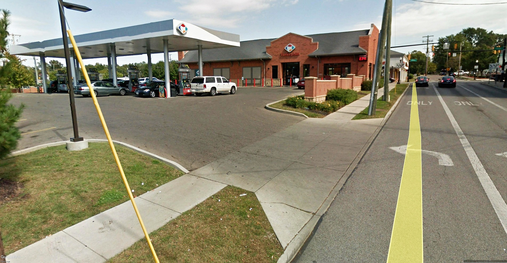
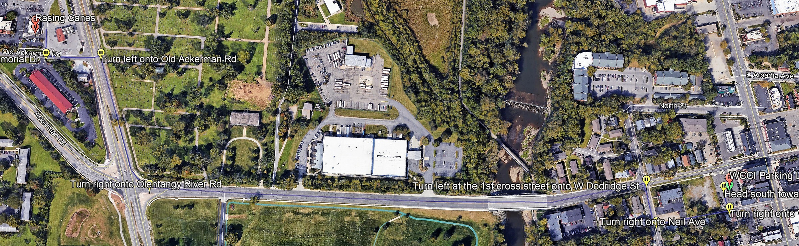

About WeCan{Code}IT
Location
WeCan{Code}IT (WCCI) is a 14-week coding bootcamp that specializes in Full-Stack Web Development, with a strong emphasis on Java. Located at the intersection of N. High Street and W. Dodridge Street in Columbus, Ohio, WCCI’s friendly staff and expert instructors help guide students—regardless of prior experience—toward becoming certified software developers. Whether you are new to coding or have some experience, WCCI provides a supportive environment to help you grow and master the necessary skills.

2645 North High Street
Columbus, OH 43202
Coordinates: 40° 0’58.46”N, 83° 0’44.37”W
The Building
The building housing WeCan{Code}IT (WCCI) is a shared space, with the entrance located at the rear, facing the parking lot. Upon entering, you’ll climb a flight of stairs to a small monitor and door. Facilities include three bathrooms (men’s, women’s, and a gender-neutral option), a cafeteria for current and alumni students, and a presentation room used for meetings, tech meetups, and ceremonies. Additionally, there are two small offices for meetings and mock interviews, and a large classroom that accommodates up to 30 students

WeCan{Code}IT Shopping Center
The Parking
Parking at WeCan{Code}IT is convenient, with a shared parking lot at the rear of the building exclusively for WCCI students. Although the spaces are reserved, students are welcome to use them. An additional lot beside the building is available if needed. Access to the lot is limited to three entrances: two on W. Dodridge Street (a one-way street) and one off W. Ramlow Alley.

Shared Parking Lot of WeCan{Code}IT
Disability Friendly-ish
While there are designated handicap spaces and ramps to access the building, WCCI does not have an elevator or ramp leading directly to the campus. If you rely on a wheelchair or motorized chair, you may face challenges. However, the staff at WCCI is always available and willing to assist with any mobility needs.
Pet Friendly
WCCI welcomes pets, including service animals and emotional support animals. The staff, being animal lovers themselves, are open to students bringing in their pets. A few students occasionally bring their dogs to visit, and as a veteran, I bring my emotional support cat, Tara, to support newer cohorts.
Nearby Fuel & Restaurants
For those concerned about fueling up, there’s a Turkey Hill gas station located directly across the parking lot from WCCI, making it easy to fill up without any hassle.

Fueling Station Across Dodrige Street.
When it comes to food, there’s plenty to choose from. I personally frequented Raising Cane’s for quick meals Monday through Thursday. On Fridays, I indulged in Ray Ray’s BBQ food truck right next to WCCI. Occasionally, I’d stop by Hound Dog’s for their delicious cheese pizza, conveniently located in the same building.

Raising Cane's
2823 Olentangy River Road
Columbus, OH 43202
Coordinates: 40° 1’6.58”N, 83° 1’30.04”W
Tuition
When I attended, tuition was approximately $12,900 for male students and $10,000 for women (to encourage diversity in tech). I utilized my VA benefits, but payment plans or loans may be available. For more details, it’s best to consult with Admissions directly.
Military & Veterans
WCCI accepts Post 9/11 GI Bill benefits, making it a great option for veterans. I personally used my remaining benefits for the bootcamp, which was the most valuable use of my GI Bill compared to traditional degrees.
The Curriculum
The 14-week full-time bootcamp is immersive, with the first four weeks focusing on backend development (Java, Spring), followed by frontend development (HTML5, CSS3, JavaScript). The curriculum is rigorous, and students are expected to put in long hours. There are extra sessions on Tuesdays and Thursdays for additional help, with classroom hours from 9:30 am to 3:30 pm.
TDD (Test Driven Development)
Test Driven Development (TDD) is an essential part of WCCI’s curriculum, introduced around week 2. Although challenging at first, TDD helps streamline development by catching errors early. It may take longer initially, but it ultimately saves time by eliminating bugs and making debugging easier. TDD teaches the importance of building software in a smooth, efficient manner—similar to the Marine Corps adage "smooth is fast, and fast is smooth."
Family
WCCI fosters a supportive environment that feels like family. Each morning, students and staff gather in a circle to introduce themselves and set goals for the day. This daily routine helps build camaraderie and encourages sharing. Alumni often visit to offer advice, and by the end of the course, students share their reflections and plans, strengthening the sense of community.
Career Services
WCCI’s Career Services go beyond teaching coding skills. Students receive guidance from a dedicated Career Success Coach who helps refine resumes, improve interview skills, and prepare for tech industry roles. The program includes mock interviews, professional networking, and introductions to employers such as Nationwide, Apex, and Pillar. Additionally, students are taught how to build a professional LinkedIn profile and attend meetups, ensuring they are fully prepared to launch their careers. So no worries!
Graduation & Demo Day
Graduation and Demo Day occur on the same day, where students present their final projects to recruiters, hiring managers, and consultants. The event offers opportunities for networking and securing job offers. After presentations, the class participates in a final "checkout" ceremony, where emotions and experiences are shared. Graduation itself is a short ceremony, followed by celebrations. Interestingly, only a few students had prior coding experience, with most coming in with no background. Despite challenges, the cohort’s growth over the 14 weeks is significant.